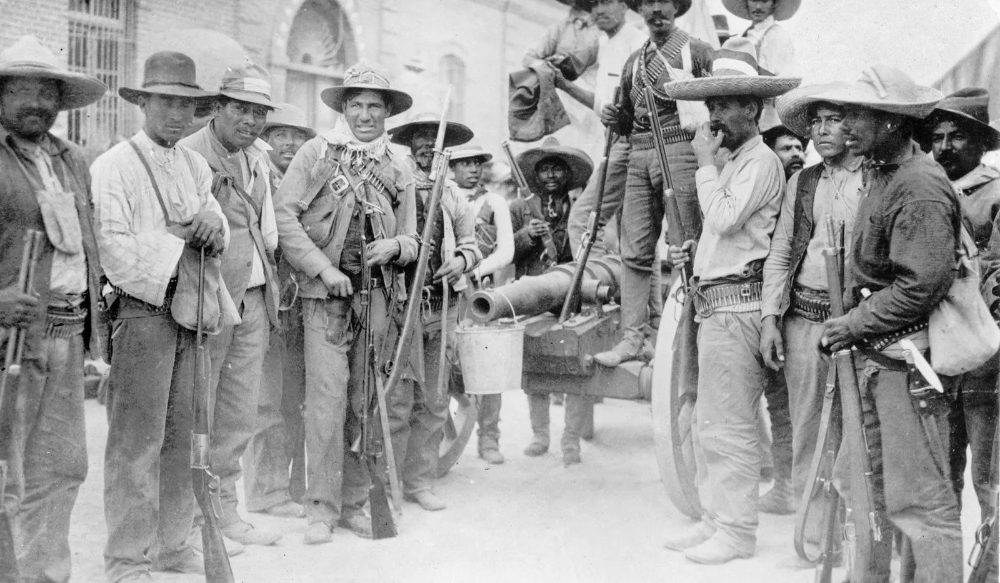

¡La Revolución Mexicana EN 5 MINUTOS! | Resumen
La revolución mexicana, que estalló en 1910, tuvo su detonante en el descontento popular hacia la dictadura de Porfirio Díaz. A partir de ahí se iniciaron una serie de violentos enfrentamientos entre los partidarios de facciones con intereses muy distintos que transformarían de manera radical las estructuras políticas y sociales del país y acabarían convirtiendo a algunos de sus líderes, como Emiliano Zapata y Pancho Villa, en auténticas leyendas.
